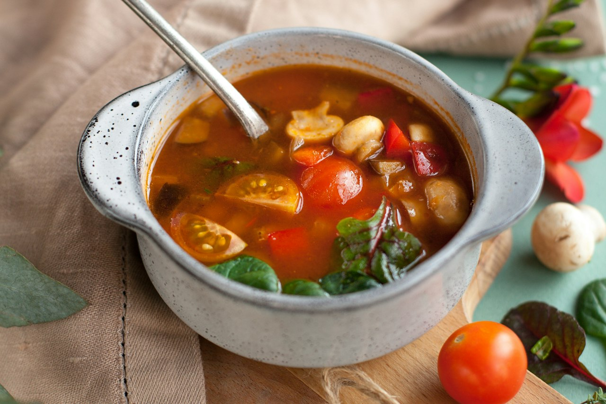

White Bean Ragù Soup
A thick, hearty bean-and-ragù soup that turns leftover ragù into a brand new meal. Cannellini beans add body and a massive fiber boost, beef bone broth deepens it, and a splash of milk tempers the tomato acidity. One of the most macro-efficient meals in the rotation — high protein, high fiber, genuinely satiating. Holds beautifully in the fridge.
Italian · Soup · High Protein · High Fiber · Dinner · Meal Prep

744kcal
56gprotein
Makes 2 servings. Whole batch: 1489 kcal, 112g protein.
Ingredients
Steps
- Add ~2 tsp olive oil to the pot and warm over medium.
- Add the leftover ragù and warm through.
- Pour in the beef bone broth, bring to a simmer, and let it marry 15-20 min.
- Stir in the mashed beans early for body, then add the whole beans near the end to warm through.
- If using lasagna sheets, tear them into pieces and simmer in the soup until tender, a few minutes before serving.
- Finish with a splash of Mootopia milk to add creaminess and temper the tomato acidity.
- Adjust herbs and seasoning at the close — taste first, since both the bone broth and the pre-seasoned ragù bring salt.
- Top each bowl with shaved parmesan, and a dollop of ricotta if using.
Built from leftover ragù, so the exact macros shift batch to batch — the numbers here are for the doubled mixed-meat version, beans, broth, oil and parm only (no pasta/ricotta). The beans are the unlock: ~26g of fiber from a single can turns this into a fiber bomb without changing the flavor much. The mashed-then-whole bean technique gives you creamy body plus intact beans for texture. A splash of milk at the end is the move for cutting the tomato acidity. Torn fresh lasagna sheets turn it into more of a lasagna soup if you want the carbs; a dollop of ricotta adds richness and texture. Scales and reheats perfectly — a full pot can carry an entire day's eating. Whole pot (no pasta/ricotta) runs ~1,489 cal / ~112g protein / ~32g fiber.